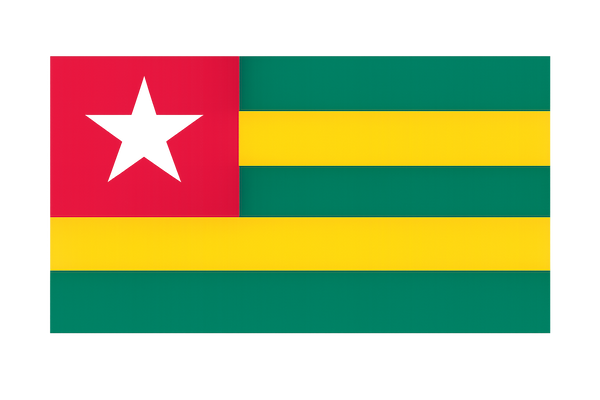

About Me
My name is Koffi Atoukoulou, I was born and raised in Togo. We are 8 in my family. I have many interests and hobbies such as football, music, and dance. I am also a passionate web developer with a strong foundation in dynamic web technologies. I enjoy creating interactive and user-friendly websites that provide excellent experiences for users.
Lomé, Togo

Togo is a country located in West Africa. It is bordered to the north by Burkina Faso, to the east by Benin, to the west by Ghana, and to the south by the Atlantic Ocean. Togo is a peaceful country with a rich cultural heritage and is known as a touristic destination.